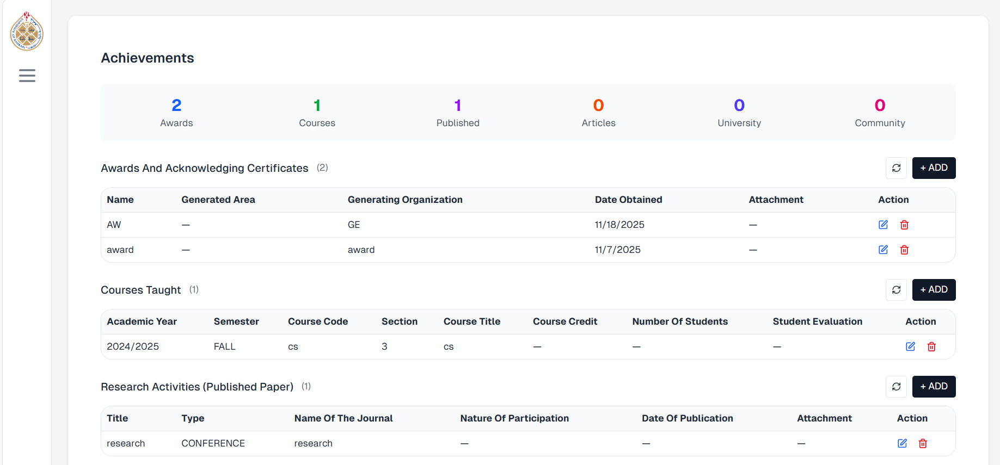
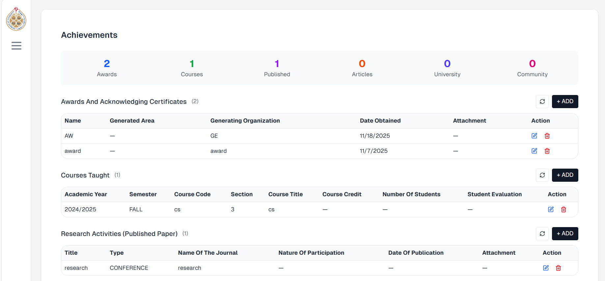
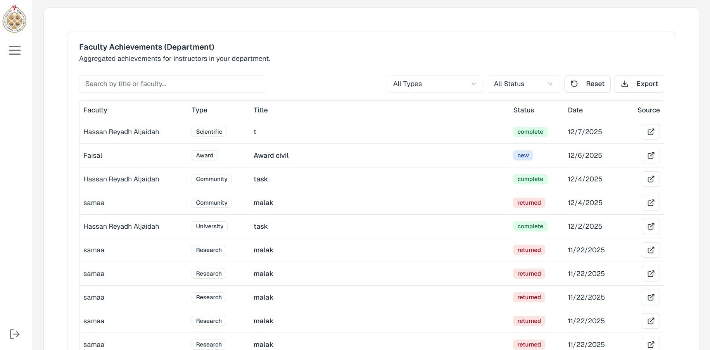
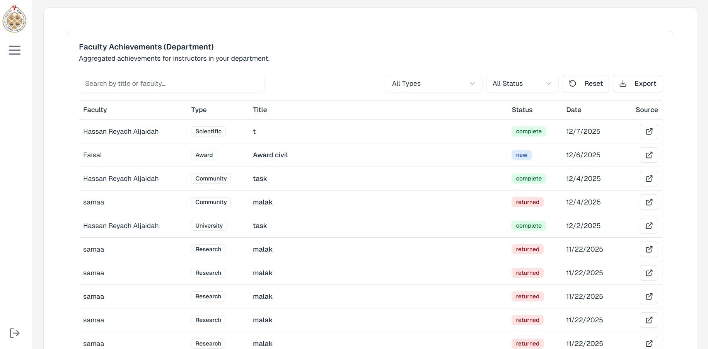

Methodology
The requirements for the Faculty Appraisal System were gathered through an online survey and represented using UML models. A Use Case Diagram shows how key actors interact with the system, while a Class Diagram outlines its main structure and relationships. A Deployment Diagram also illustrates how users access the system through a web browser, with Next.js/Node.js handling requests and authentication, and PostgreSQL managing the database. Together, these models clearly describe how the system works. The system was developed using the Agile methodology, with version control managed through GitHub. Comprehensive testing was performed, including unit, functional, integration, and validation testing, to ensure correctness, reliability, and usability. Together, these models and practices clearly describe how the system works and how it was developed.
Deployment Diagram
Use Case Diagram
UML Class Diagram
Technologies Used
Programming Languages
JavaScript (for both frontend and backend)
Frameworks / Libraries
- React.js – Frontend UI development
- Next.js – Server-side rendering and routing
- Node.js – Backend server and API development
Database / ORM
- PostgreSQL – Relational database management
- Prisma – ORM for querying PostgreSQL
Version Control / Collaboration
GitHub – Source code management
Deployment / Hosting
Web browser-based access (Vercel)
Results
Our project solves the problems caused by the University of Bahrain’s slow and error-prone manual faculty evaluation process by digitalizing it. Surveys and interviews confirmed the need for a faster and more organized system, leading to the development of our web-based Faculty Appraisal System. The prototype transforms the traditional Word-based forms into an online workflow with automated data handling, clear evaluation steps, and interactive dashboards. This proves the system’s ability to streamline performance reviews, reduce mistakes, and support better decision-making across the university.
Main System User Interfaces


 

 



Performance Graphs
Testing Outcomes
| Test Type | Description | Outcome |
|---|---|---|
| Unit Testing | Tests individual functions for correct output. Example: Login with correct/incorrect credentials, add/delete achievements. | Passed |
| Functional Testing | Ensures system features work from input to output. Example: Submit achievement forms, calculate appraisal scores, display results. | Passed |
| Integration Testing | Checks interaction between modules and the database. Example: Evaluator submits scores → database updates → reports generated. | Passed |
| Validation Testing | Ensures required fields and correct inputs. Example: Empty email or password triggers error messages; change password validation. | Passed |
The system user interfaces, performance graphs, and testing outcomes above demonstrate the system’s functionality, reliability, and ability to improve the faculty appraisal process at the University of Bahrain.
Demo
Elevator Pitch Video
Short video (1–3 minutes) presenting the purpose, key features, and benefits of the Faculty Appraisal System.
System Walkthrough
Visual walkthrough demonstrating core workflows such as user login, faculty evaluation, and performance dashboards.
Live Demo
Access the deployed Faculty Appraisal System and explore all features using demo credentials.
View Live SystemConclusion
This project successfully developed a digital Faculty Appraisal System to replace the slow and error-prone manual evaluation process at the University of Bahrain. By gathering requirements from faculty, department heads, and deans, and using modern technologies like Next.js, PostgreSQL, and Prisma, we created a system that streamlines evaluations, reduces mistakes, and improves transparency.
Future Work
- Integrate the platform with the university’s SIS and Bahrain’s Civil Service Bureau, add a secure forgot-password feature, develop customizable dashboards and reporting tools, introduce notification alerts, improve mobile responsiveness, and include automated testing.
- Complete the remaining features that were not finished due to time limitations, system complexity, and limited access to real institutional data, as they offer strong opportunities for further development.
System Features
Real-time Analytics
Interactive dashboards showing performance metrics and trends for individual faculty and departments.
Role-based Access
Secure login with different interfaces for Faculty, HoDs, Deans, and Administrators.
Automated Evaluation
Automated scoring based on rubrics with support for approval and appeal workflows.
Document Management
Faculty can upload, view, and manage documents like certificates, reports, and achievements directly within the system for easy tracking and verification.
Report Generation
Generate comprehensive reports in PDF, CSV, and JSON formats for analysis and record-keeping.
Continuous Updates
Faculty can update achievements throughout the year instead of waiting for annual review.
About The Project
This project is a Final Year Senior Project completed during Semester 1 of the Academic Year 2025/2026 at the College of Information Technology — University of Bahrain.
The Faculty Appraisal System is a web-based platform developed to improve the traditional manual faculty evaluation process by providing an automated, centralized, and transparent solution for academic performance assessment.
Project Details
University: University of Bahrain
College: College of Information Technology
Department: Computer Science
Course: ITSE 498 – Senior Project
Academic Year: 2025/2026 – Semester 1
Project Type: Final Year Senior Project
Supervisor: Dr. Abdulla Ahmed Alasaadi
Development Team
Malak Jamal Almari
Major: Software Engineering
Email: 202103282@student.uob.edu.bh
LinkedIn: https://www.linkedin.com/in/malak-almari-bb59a6304
GitHub: https://github.com/MalakAlmari
Hala Khalid Altahmazi
Major: Software Engineering
Email: 202106069@student.uob.edu.bh
LinkedIn: https://www.linkedin.com/in/hala-altahmazi-05b216234
GitHub: https://github.com/Hala6069
Samaa Atta Elsayed
Major: Software Engineering
Email: 202105461@student.uob.edu.bh
LinkedIn: https://www.linkedin.com/in/samaa-atta-517951379
GitHub: https://github.com/SamaaAtta
Project Supervisor
Dr. Abdulla Ahmed Alasaadi
Rank: Head of Department
Email: aalasaadi@uob.edu.bh
Project Resources
Complete Project Report
View the full project documentation including all chapters, methodology, implementation details, and results.
View PDF Report123 Pages | Updated: Dec 2025
Live System Access
Access the deployed Faculty Appraisal System. Use the demo credentials below to explore all features.
Go to Live SystemDemo Credentials:
👨🏫 Faculty: faculty@uob.edu / demo123
👨💼 HOD: hod@uob.edu / demo123
Source Code
Explore the complete source code on GitHub. Includes frontend, backend, database schemas, and documentation.
View on GitHubTech Stack:
React.js • Node.js • PostgreSQL • Prisma
Contact Information
Project Team Contacts
For inquiries about this project, please contact the team members or supervisor:
Team Members
Malak Jamal Almari:
malakalmari2@gmail.com
Hala Khalid Altahmazi:
Halaaltehmazi@gmail.com
Samaa Atta Elsayed:
samaaatta61@gmail.com
Supervisor
Dr. Abdulla Ahmed Alasaadi
Head of Department, Computer Science Department
aalasaadi@uob.edu.bh
General Inquiries
Department:
Computer Science Department
College:
College of Information Technology